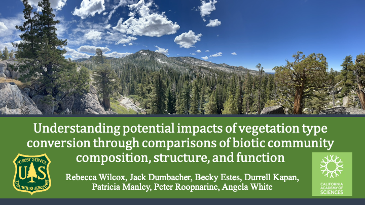
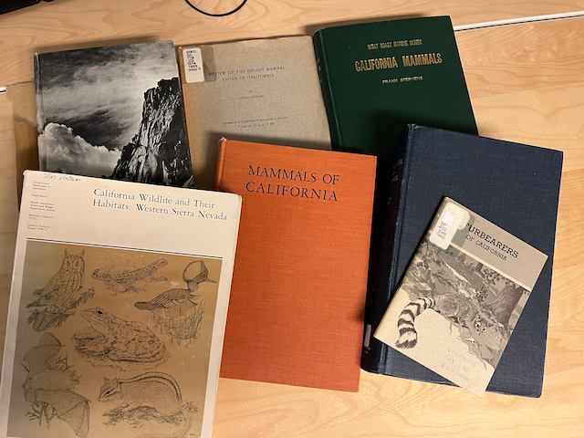
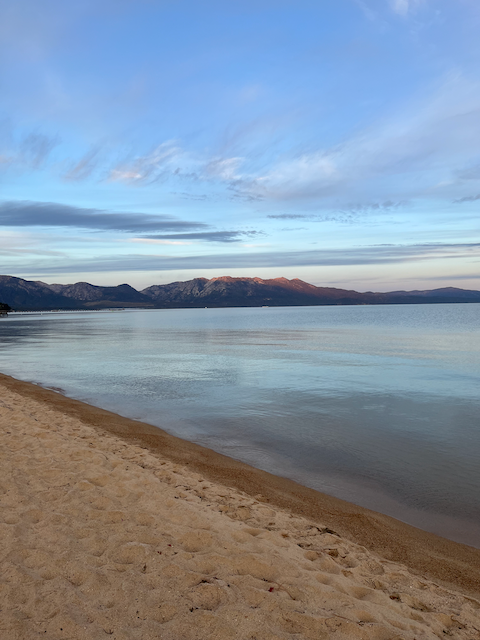
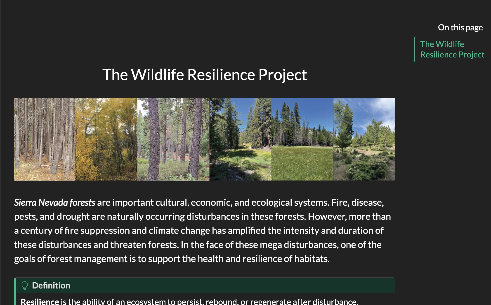
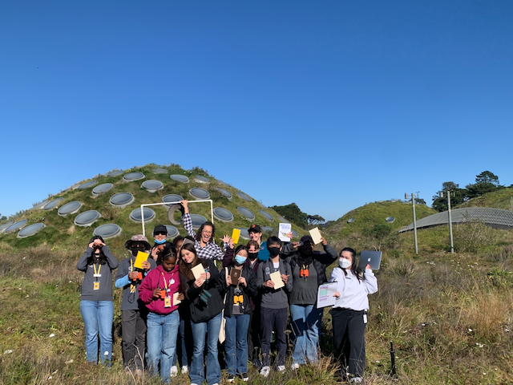
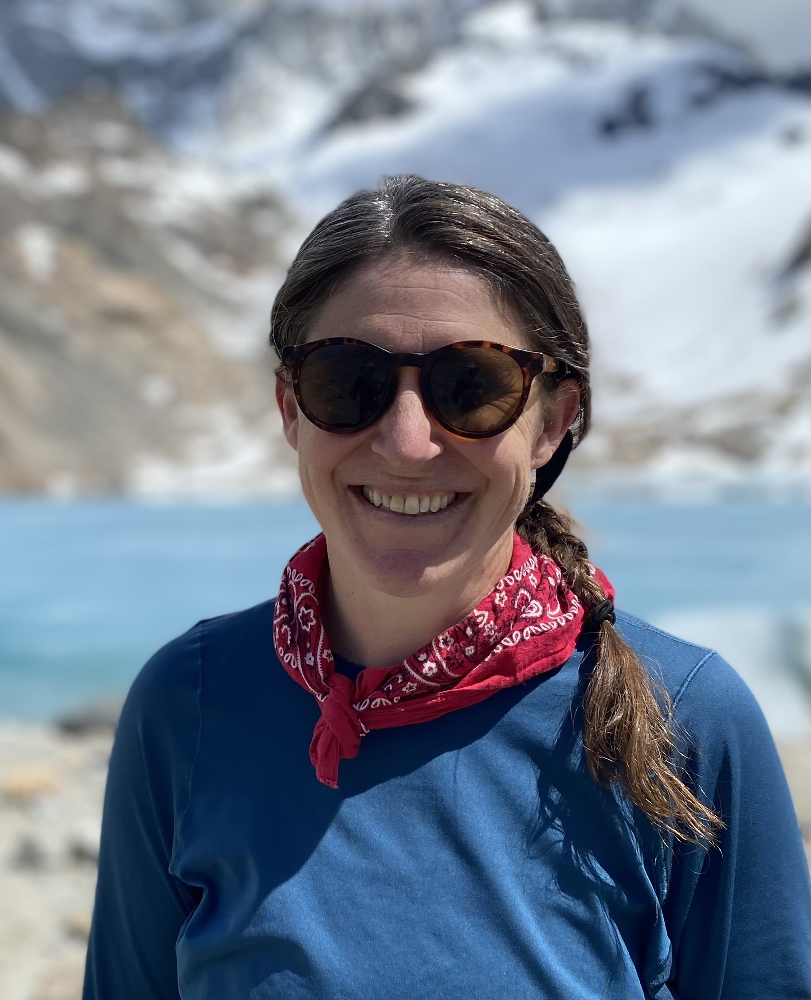
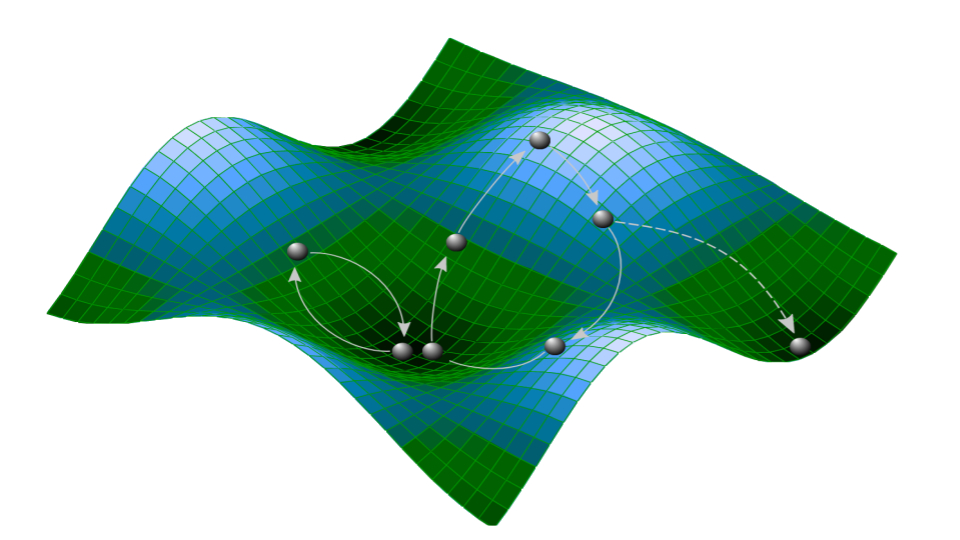

Home
Resilience
Biodiversity
Food Webs
Metrics
Central Sierra
Applications
Highlights
Resources
About
On this page
Highlights
Categories
All
(18)
announcement
(4)
deep dive
(1)
field trips
(2)
meetings
(7)
outreach
(6)
resilience
(1)
update
(2)
Highlights
Highlights

Western Section of The Wildlife Society Meeting
outreach
Rebecca and PI Angela White attended the Western Section of The Wildlife Society Meeting 2024 in Sonoma County. Angela presented her work with post-fire landscapes in a talk…
Feb 6, 2024
Rebecca Wilcox

Biodiversity research
outreach
Rebecca worked with California Academy of Sciences (CAS) Curator of Botany Sarah Jacobs to teach a course entitled “Biodiversity Research”, for the Careers in Science intern…
Nov 19, 2023
Rebecca Wilcox

Lake Tahoe Science to Action Conference
meetings
Team members Patricia Manley, Angela White and Rebecca Wilcox attended the Tahoe Science Advisory Council’s 2023 Science to Action conference in South Lake Tahoe Oct…
Oct 13, 2023
Rebecca Wilcox

Website Soft Launch
announcement
With the continued support of the Wildlife Conservation Board and the hard work of intern Mark Schulist and post-doc Rebecca Wilcox we are now launching this Wildlife…
Sep 28, 2023
Durrell D. Kapan
Field trip Caples vs Caldor fire assessing impact levels
meetings
field trips
Team members (Durrell Kapan, Jack Dumbacher, Pat Manley, and Rebecca Wilcox) toured the Caples Creek Ecological Restoration Project watershed to look at the different…
Jun 10, 2023
Durrell D. Kapan
Lake Tahoe Biologists Inter-agency Group (BIG) presentation and outreach
meetings
outreach
On May 17, 2023, Rebecca presented “Metrics of wildlife community resilience” to the Lake Tahoe Biologist’s Interagency Group (BIG). The BIG group is comprised of state…
May 20, 2023
Durrell D. Kapan
New outreach document
announcement
Rebecca finished this new outreach document for distribution.
Mar 31, 2023
Durrell D. Kapan
Full team meeting Davis, CA
meetings
All wildlife resilience team members met at the USFS office in Davis California to address current progress and make goals for the coming year.
Jan 6, 2023
Durrell D. Kapan
Grasslands Convening
update
meetings
Co-PIs Dr. Peter Roopnarine (curator of Paleontology and Geology) and Dr. Jack Dumbacher (Curator of Ornithology and Mammology) and post-doc Dr. Rebecca Wilcox attended the…
Dec 12, 2022
Durrell D. Kapan

Biodiversity in the park
outreach
Rebecca worked with California Academy of Sciences (CAS) Curator of Botany Sarah Jacobs to teach a course entitled “Biodiversity in the Park”, for the Careers in Science…
Nov 19, 2022
Rebecca Wilcox
Field trip TCSI and LTB forests: disturbance impacts and management treatments
field trips
Rebecca, Becky, Pat and Angela toured forests in the TCSI landscape and the Lake Tahoe basin to observe the impacts of disturbances (e.g., fire) and management (mechanical…
Oct 31, 2022
Durrell D. Kapan
Member talk at the Academy
outreach
Rebecca presented “Biodiversity and Sustainability of Sierra Nevada Wildlife Communities” to California Academy of Sciences members on October 25th. The talk was well…
Oct 26, 2022
Member talk at the Academy
California Wildfire and Forest Resilience Task Force
outreach
meetings
Becky, Pat and Rebecca attended the California Wildfire and Forest Resilience Task Force meeting in Grass Valley CA (September 27th-28th). Rebecca tabled and presented…
Sep 30, 2022
Rebecca C. Wilcox
First in person meeting! Welcome Angela!
meetings
Co-Principal Investigator Angela White from the USFS Pacific SW Research Station visited the team (Rebecca, Peter & Durrell) at the California Academy of Sciences to discuss…
Jan 7, 2022
Durrell D. Kapan
Working on Wildlife Resilience during a pandemic!
update
We had a busy year despite the mandatory social distancing! This year our interdisciplinary team met remotely over 20 times and build a draft a dynamic food web for Sierra…
Dec 14, 2021
Durrell D. Kapan

Welcome Rebecca Wilcox
announcement
We are excited to welcome Dr. Rebecca Wilcox, a community ecologist specializing in birds, climate change, and novel ecosystems with experience ranging from the Pacific…
Nov 10, 2021
Durrell D. Kapan

Diving into resilience
deep dive
resilience
Resilience in a complex system is illustrated by the green surface below taken from Roopnarine &
Angielczyk
(
“Chapter 13: The Stability of Ecological Communities as an Agent…
Feb 14, 2021
Durrell D. Kapan
Getting started with the Metrics of Wildlife Resilience project!
announcement
Happy New Year! The California Wildlife Conservation Board (WCB) funded our “Metrics of Wildlife Community Resilience for Sierra Nevada Forests.” This support will make it…
Jan 6, 2021
Durrell D. Kapan
No matching items